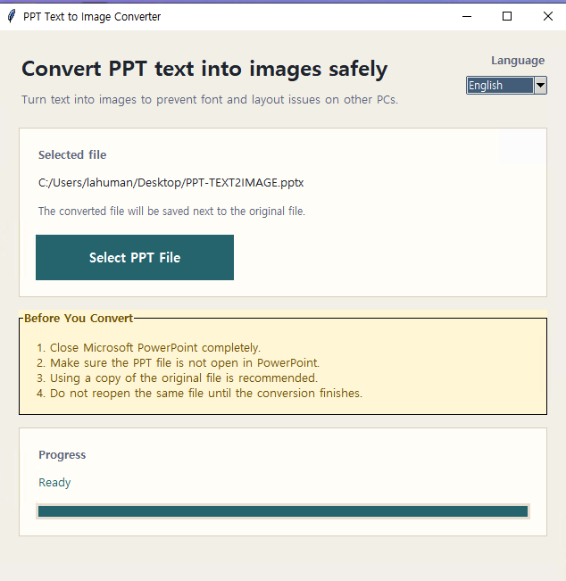
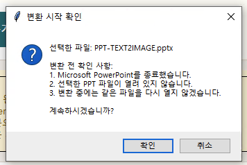

PowerPoint 배포용 문서를 더 안전하게
Latest Release v1.1
UI polish + visible progress + safer pre-checks
PPT 텍스트를
이미지로 바꿔
레이아웃을 지킵니다
다른 PC에서 글꼴이 바뀌거나 줄바꿈이 틀어져 발표 자료가 망가지는 일을 줄이세요. 이 도구는 슬라이드 안의 텍스트를 이미지로 바꾸어, 전달용 PPT를 더 안정적으로 만들어 줍니다.
Windows 10 / 11 지원
Microsoft PowerPoint 필요
로컬에서만 처리

실제 한국어 UI와 진행 바 화면

영문 사용자도 바로 사용할 수 있는 인터페이스

변환 전 확인 팝업으로 실수 방지
Best Fit
이런 상황이라면 더 유용하게 느껴집니다
단순히 “텍스트를 이미지로 바꾸는 도구”가 아니라, 전달 직전의 불안을 줄여주는 실무용 유틸리티로 소개될 수 있도록 맥락을 더했습니다.
고객사 전달용 PPT를 만들 때
상대방 PC에 폰트가 없을 가능성이 있으면, 전달본을 따로 준비할 때 특히 유용합니다.
회의실 PC나 행사장 PC에서 발표할 때
내 노트북이 아닌 환경에서 열어도 화면 차이를 줄이고 싶을 때 신뢰도가 올라갑니다.
작업용 원본과 배포용 파일을 분리할 때
편집용 원본은 유지하고, 전달용으로만 안전한 버전을 하나 더 만드는 흐름에 잘 맞습니다.
혼자보다 팀과 함께 쓸 때
한국어/영어 UI와 분명한 안내 문구 덕분에 팀원에게 넘겨도 설명 부담이 적습니다.
Problem Solved
상대방 PC 환경이 달라도, 보여지는 결과를 더 일정하게 유지합니다
배포용 PPT는 폰트, 줄바꿈, 텍스트 영역 오버플로우 때문에 마지막 순간에 무너지는 경우가 많습니다. 이 프로그램은 바로 그 불안 요소를 줄이기 위해 만들어졌습니다.
폰트가 바뀌어도 내용 위치가 흔들리지 않게
수신 PC에 같은 글꼴이 없어도, 텍스트를 이미지로 바꾸어 핵심 타이포그래피와 배치를 더 안정적으로 지킵니다.
다시 손보는 시간을 줄이기
발표 직전 다른 PC에서 틀어진 화면을 급하게 수정하는 대신, 미리 변환된 전달본을 준비할 수 있습니다.
도구 자체는 어렵지 않게
복잡한 설정 없이 PPT 파일만 선택하면 변환이 시작되며, 상태 텍스트와 진행 바도 바로 확인할 수 있습니다.
Screen Tour
실제 프로그램 화면을 중심으로, 처음 써도 헷갈리지 않게 구성했습니다
선택한 파일, 저장 위치 안내, 변환 전 체크리스트, 진행 상태, 언어 전환까지 사용자가 실수하기 쉬운 부분을 화면 자체에서 먼저 잡아줍니다.
메인 화면에서 필요한 정보가 바로 보입니다
선택한 파일명, 결과 저장 위치, 변환 전 주의 사항, 현재 진행 상태를 한 화면 안에서 확인할 수 있습니다.
영문 UI도 자연스럽게 지원합니다
해외 파트너나 영문 환경 사용자도 추가 설명 없이 바로 사용할 수 있도록 전체 UI가 전환됩니다.
시작 전 한 번 더 확인해 줍니다
PowerPoint 종료 여부와 대상 파일이 열려 있지 않은지 체크해, 변환 실패 가능성을 줄입니다.
Workflow
사용 흐름은 짧고, 체크 포인트는 분명하게
낯선 메뉴를 뒤질 필요 없이, 한 번의 선택과 한 번의 확인만으로 변환을 시작할 수 있습니다.
1
PPT 파일 선택
변환할 파일을 선택하면, 저장 위치와 대상 파일명이 바로 표시됩니다.
2
시작 전 확인
PowerPoint 종료 여부와 파일 잠금 상태를 다시 확인해 실수를 줄입니다.
3
진행 확인 후 완료
진행 상태를 보면서 기다리면, 원본 폴더에 새 결과 파일이 저장됩니다.
변환 전에 꼭 확인하세요
실제 PowerPoint 엔진을 사용하므로, 아래 조건을 맞춰두면 훨씬 안정적으로 작업할 수 있습니다.
Microsoft PowerPoint를 종료
변환 시작 전 PowerPoint를 완전히 닫아 두면 파일 충돌과 잠금 문제를 줄일 수 있습니다.
대상 파일이 열려 있지 않은지 확인
같은 PPT가 다른 창에서 열려 있으면 저장이나 변환 과정에서 실패할 수 있습니다.
배포용이라면 복사본 권장
작업용 원본과 전달용 변환본을 분리하면 문서 관리가 훨씬 수월해집니다.
자주 궁금해하는 점
간단하지만 실제 사용 맥락에서 많이 묻는 질문을 먼저 정리했습니다.
웹 서비스가 아니라 설치형 프로그램인 이유는 무엇인가요?
보안이 필요한 문서를 외부 서버에 올리지 않고 로컬 PC 안에서만 처리하기 위해서입니다.
변환 후에도 발표용으로 보기 괜찮나요?
텍스트를 고화질 이미지로 내보내기 때문에 일반적인 발표 환경에서는 선명도를 충분히 유지합니다.
영문 사용자도 사용할 수 있나요?
네. UI 전체를 한국어와 영어로 전환할 수 있어 팀 배포나 해외 협업에도 적합합니다.
바로 내려받아, 전달용 PPT를 더 안정적으로 준비해 보세요
발표 직전 다른 PC에서 화면이 달라지는 일을 줄이고 싶다면, 이 도구가 가장 먼저 챙겨야 할 전달본을 만들어 줍니다.
파일 선택부터 완료까지 UI가 단순해 처음 써도 부담이 적습니다.
주의 사항과 확인 팝업이 포함되어 있어 변환 실패를 줄이는 흐름을 제공합니다.
한국어와 영어 UI 스크린샷 그대로, 실제 배포 전 체크용 도구로 쓰기 좋습니다.